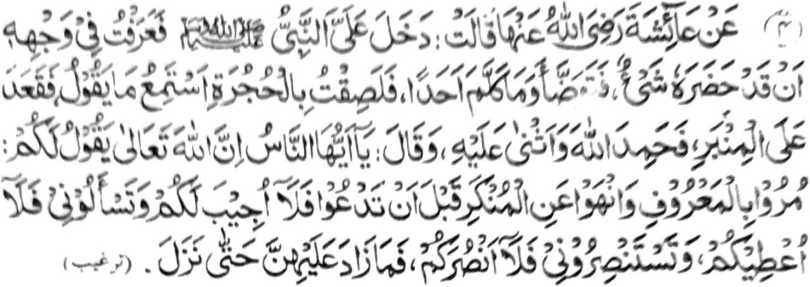
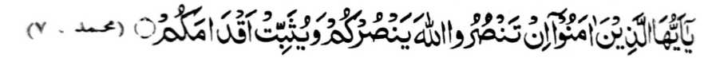
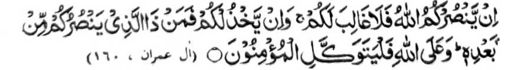

Miyaka thitayan ko A'isha (Radhiallaho ‘Ahna) a pitharo iyan, “Miyakasoled raken so Nabi (Sallallaho ‘Alaihi Wasallam) na miya-ilay aken ko bontal iyan a sabenar a aden a miyanggola-ola. Miyagabedas sekaniyan na da den a inimbitiyara-i niyan a sakatao bo. (Oriyan o kiyasoled iyan sa Masjid na) Domiping ako ko rending ka phamamakinegen ko antona-ai petharo-on niyan. Miyontod sekaniyan ko mimbar na piphodi-podi niyan so Allah. Na miyatharo iyan, "Hay manga tao! mata-an a so Allah a Maporo na pitharo Iyan, ‘Sogo-on niyo so mapiya go saparen niyo so marata ko ona-an pen o masa a thawagen Ako niyo na di Aken sekano zembagen, go phamangeni kano Raken na di Aken sekano mbegan, go phaki-tabang kano Raken na di Aken sekano thabangan.’” Na da den a inipagoman niyan ro-o taman sa tomipad bo [ko mimbar]. ”
So siran noto a manga tao a kabaya iran a kapakithidawairan ko manga rido-ai o Islam, ogaid na indadarainon niran so manga sarat ko Islam, na inengka-a iran angka-iya Hadith phiya-piya; kiyalipatan niran a so bager ago kathathakena o Ummat a manga Muslim na si-i zasandala ko gi-i kipanolonen ko Islam. So Hazrat Abu Darda (Radhiallaho Anho), a isa ko manga miyatindos ko manga Sahabah o Nabi (Sallallaho ‘Alaihi Wasallam) na pitharo iyan, “Paliyogat rekano so kisogo-on niyo ko manga tao ko mapiya, go so kasapari kiran ko marata, ka o di [niyowa-i nggalebeka] na pakindato-an kano o Allah sa tangarasi a datu a di niyan phagadatan so manga toto-a rekano, go di niyan ikhapedi so manga kangoda-an rekano. Oriyan niyan na mamangeni Rekaniyan so miphiya-piya a manga tao, na di Niyan tharima-an so pangeni ran, go phakitabang siran Non na di Niyan siran thabangan, go phakirila siran Non na di Niyan siran perila-an, sabap sa pitharo o Allah:

"Hay so Miyamaratiyaya! O tabangi niyo so (Agama o) Allah, na thabangan kano Niyan, go pbakabageren Niyan so manga tindeg iyo." [Surah Muhammad:7]
Pitharo pen o Allah ko manga ped a Ayaat:

"Amay ka tabangan kano o Allah na da a makapeges rekano; na o di kano Niyan tabangi, na antawa-a san-i makatabang rekano ko oriyan Niyan? Na so bo so Allah, i sarigi o Miyamaratiyaya." [Surah Aali-‘Imran 160]
Miyapanothol o Hazrat Huzaifah (Radhiallaho ‘Anho) a so Nabi (Sallallaho ‘Alaihi Wasallam) na miyatharo iyan a riza iyan a sapa:
“Paliyogat rekano so kisogo-on niyo ko manga tao ko manga pipiya galebek, go so kisaparen niyo kiran ko manga inisapar; ka odi [niyo wa-i nggalebeka] na siksa-an kano o Allah sa malipedes, go so manga pangeni niyo na di Niyan tharima-an.”
Ipo-on si-i na so manga paga-adatan [a pembatiya sangka-iya a kitab] na pamimikiranen tano o miyakapira tano masopak so manga sogo-an o Allah; ka misabap si-i a kakhatokawi tano o ino so manga panagontaman tano a imbolong ko pagetao na da perarad, go ino so manga pangeni tano na da makata-asar, go ino giyangkoto a pinggalebek iran na da kasabapi sa kapaka-ozor ka ba den salebi-lebi a kiyadarodos iyan.